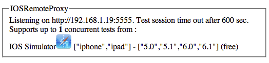

Running ios-driver on the Grid
You can add ios-driver as a node to a running grid hub. In order to connect to a grid, you can specify the below command line parameters when running ios-driver:
java -jar ios-server-standalone-xyz.jar -hub http://<ipaddress of grid hub>:4444/grid/register -host 127.0.0.1 -port 5555
You can also specify a custom proxy to use on the grid, for example:
java -jar ios-server-standalone-xyz.jar -hub http://<ipadress of grid hub>:4444/grid/register -proxy org.uiautomation.ios.grid.IOSRemoteProxy -host 127.0.0.1 -port 5555
Starting the Selenium GRID / IOSRemoteProxy
In order to start Selenium Grid and to have it work with ios-driver, you need to start it with IOSRemoteProxy. The remote proxy polls the node to see if the capabilities have been updated. This will allow you to use ios-driver as part of your CI process where new a version of apps can be added to ios-drivers capabilities. Have a look at the -folder parameter option if you'd like to dynamically pick up new apps. If IOSRemoteProxy discovers new capabilities on the node, it will mark the node as down, wait for any running tests to complete and will then re-register the node with the updated capabilities making them available for testing.
Where to get IOSRemoteProxy?
Currently you need to build IOSRemoteProxy yourself but we are planning to put it into the ios-driver very soon. All you need to build it is maven and ios-driver checked out locally on your machine
Building IOSRemoteProxy
- go to the folder where ios-driver is checked out to: i.e. ~/ios-driver
cd grid- in a terminal window enter:
mvn package - copy the resulting ios-grid.jar from ios-driver/grid/target to the location where you run the hub
- now you can start the grid hub with the following command:
java -cp ios-grid.jar:selenium-server-standalone.jar org.openqa.grid.selenium.GridLauncher -role hub